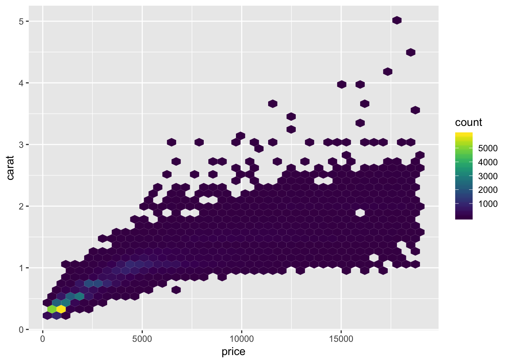

Visualization Dos & Don’ts
Visualization is a critical piece of our job as researchers. We need to communicate our findings to our peers, the public, and beyond. Bear in mind that humans are very visual—we process images 60,000 times faster than text, and nearly 90% of all the information transmitted to our brains is visual—so typically people remember far more of what they see versus what they read. Especially if that happens to be a well-designed, concise visualization of a pattern or trend. We like stories, so try to tell a story with your figure and make it stand alone.
Historical Data Visualization
Data visualization is not new. There have been many amazing maps and visualizations through the centuries. One of the common examples you may run across is Charle’s Minard’s map of the effect of temperature on Napoleon’s invaision of Russia through time. It packs 6 different types of data into one plot (distance, lat, lon, directionality, temperature, and dates). This type of plot later became known as a “Sankey plot”, and is still commonly used.

Another set of great examples includes Florence Nightingale’s coxcomb charts (1854) depicting the effect of disease on mortality of troops. It’s basically a fancy polar-diagram showing the timing of deaths (preventable) from disease in blue, and from wounds and other causes in red and black.

Another example is John Snow’s (no, not “winter is coming”) dot maps of cholera deaths in relation to the origin of drinking water sources were critical in founding the field of epidemiology.

Data Visualization in R
There are many tips and tricks that are available for the multitude of visualization packages in R. However, there aren’t as many simple rules or suggestions on what actually makes a good visualization. This starts with the “grammar of graphics”, which is the fundamental rules or principals which describe an art or science (from Wickham 2010).
“A good grammar will allow us to gain insight into the composition of complicated graphics, and reveal unexpected connections between seemingly different graphics (Cox 1978)”
Because there are so many options and methods to plot our data in R, we need to think about how we are going to represent the data, how can that data be interpreted visually, and what story it may tell.
A very nice example of this is provided by this animation (created by Darkhorse Analytics, and used in Jenny Bryan’s excellent stat545 course). It shows how simplification can make a big difference in communication.

ggplot2
While there are many visualization options in R, I believe the most comprehensive and powerful is the ggplot2 package. Much of the class has used/follows ggplot, so here’s a little background that might be useful.
- Based on Grammar of Graphics book by Leland Wilkinson hence ‘gg’
- Each part of the plot is layered or built upon the other parts (like building legos).
- Consider parts of a
ggplot2as parts of a house.- Data = The materials the house is built from (
ggplot(data=yourdata)) - Plot Type = The structure/design of your house (how will it look?) (
geom_) - Aesthetics = What the exterior looks like, i.e., the paint/decor (
aes()) - Stats = Ways to wire or plumb your house…how to tie your data together, or transform it (
stat_)
- Data = The materials the house is built from (
Visualization Tips
This information isn’t meant to be comprehensive, but at minimum, it may provide some guidance when you are creating plots and figures.
Visualization Do’s
The most basic tip is keep it simple! Stick with a clean and clear message, what is your plot/figure trying to get across? Data visualization is effective when it is simple, and repackages data into a visual story that is easy to understand.
- Label appropriately and legibly, including axes, and use text to highlight important bits
- Use one color to represent each category, consider colorblind/BW friendly palettes
- Order datasets using logical heirarchy (Make it easy for reader to compare values)
- Use icons when possible to reduce unnecessary labeling
- Pay attention to scale (e.g., start axis at zero not 2.4 to 3.5)
- Include your data/outliers where possible
Visualization Don’ts
A few things to avoid (which basically relates to keeping it simple):
- Don’t try to add too much into one plot…keep it simple
- Don’t add color uncessarily unless it provides a specific function
- Avoid high contrast colors (red/green or blue/yellow)
- Don’t use 3D charts. They can make it hard to discern or perceive the actual information.
- Avoid ornamentation (shadowing, extra illustration, etc)
- Avoid more than 6 categorical colors in a layout unless you looking at continuous data.
- Keep fonts simple (avoid uncessary bold or italicization)
- Don’t try to compare too many categories or data types in one chart
Examples
Scatterplots
One of the best simple plots for examining patterns in data, but very effective. Also used when adding model trend lines.
suppressPackageStartupMessages(library(ggplot2))
plot(x=iris$Petal.Width) # single variable
plot(x=iris$Petal.Width, y=iris$Petal.Length) # multiple variablesggplot() + geom_point(data=iris, aes(x=Petal.Width, y=Petal.Length))
ggplot() + geom_point(data=iris, aes(x=Petal.Width, y=Petal.Length, fill=Species), pch=21, size=3, alpha=0.5)
Lineplots
Comparing relative change in quantities across a variable like time. Note the change when we avoid facetting each line independently.
plot(EuStockMarkets)suppressPackageStartupMessages(library(tidyverse))
EuStockMarkets_df <- data.frame(as.matrix(EuStockMarkets), date=as.numeric(time(EuStockMarkets)))
EuStockMarkets_long <- gather(data = EuStockMarkets_df, key = "Market", value="value", 1:4)
ggplot() + geom_line(data=EuStockMarkets_long, aes(x=date, y=value, color=Market))Barplots
Comparing totals across multiple groups. Notice legibility when you stack the bars.
# code adpated from https://www.analyticsvidhya.com/blog/2015/07/guide-data-visualization-r/
suppressPackageStartupMessages(library(viridis))
barplot(iris$Petal.Length)
barplot(iris$Sepal.Length,col = viridis(3, option = "A")) barplot(table(iris$Species,iris$Sepal.Length),col = viridis(3, option = "A")) Hexbins
This isn’t as commonly used, but binning data is an effective way to represent lots of pieces. Hexbins are effectively just histograms.
suppressPackageStartupMessages({
library(hexbin);
library(viridis);
library(ggplot2)
})
a=hexbin(diamonds$price,diamonds$carat,xbins=40)
plot(a)ggplot() + geom_hex(data=diamonds, aes(x=price, y=carat), bins=40) +
scale_fill_viridis()
Additional Resources
Here’s a list of resources you may want to check out. Many of these have lots of examples and code you can try out.
- Hadley’s R for Data Science Chap. on Data Visualisation
- The Layered Grammar of Graphics
- Modern Diver Lesson on Data Vis
- Top 50 ggplot2 Visualizations: A great set of examples and code for many different types of ggplots you can make
- Great tips on data design
- Some nice Tips by chart type
- More examples for Data Viz